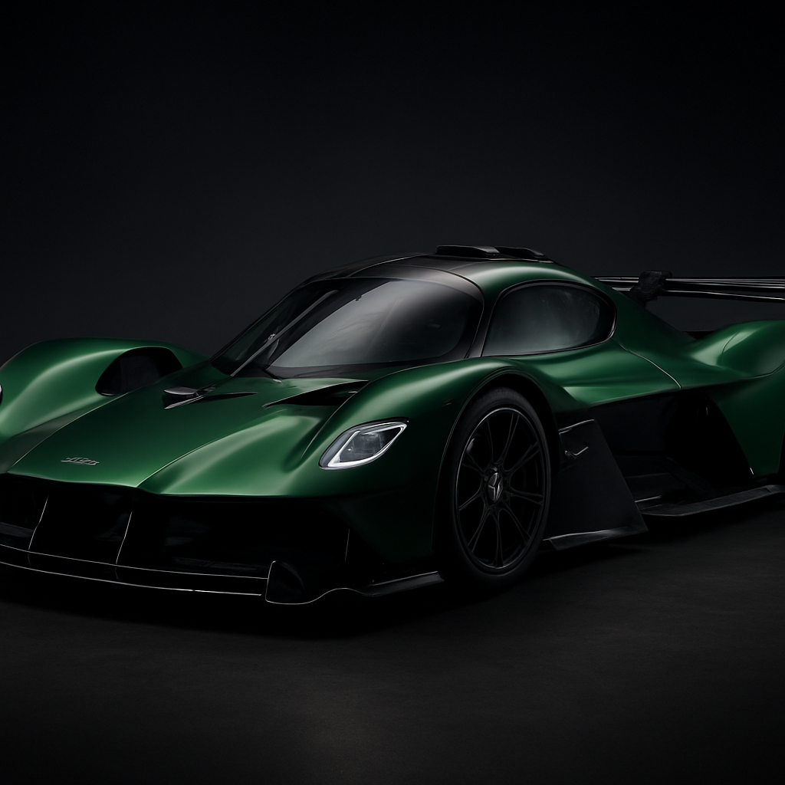
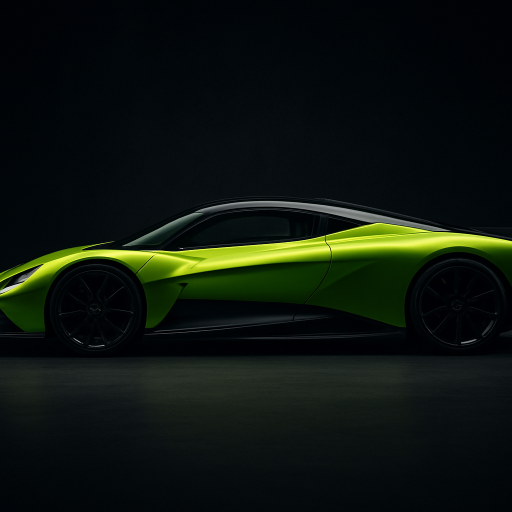
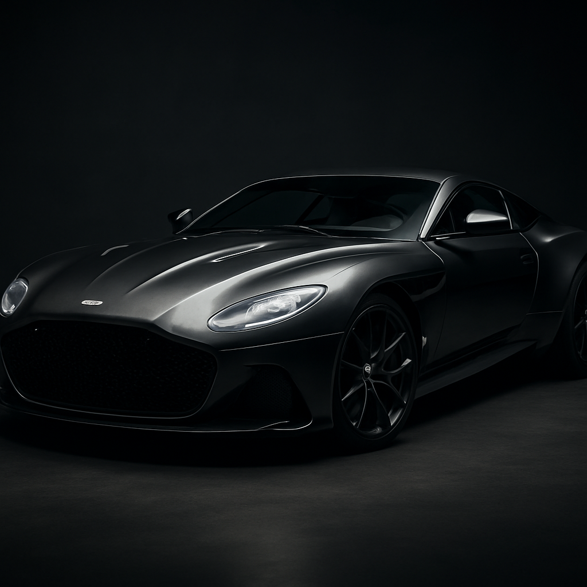

Valkyrie
2021Desarrollado junto a Red Bull Racing, es lo más cercano a un Fórmula 1 de calle. Un V12 atmosférico híbrido que ruge hasta las 11.000 rpm.
1.160HP
350km/h
V12 HíbridoMotor
Aston Martin fue fundada en 1913 por Lionel Martin y Robert Bamford. Con más de un siglo de historia, la marca de Gaydon, Inglaterra, se ha consolidado como sinónimo de gran turismo de lujo, sofisticación y deportividad refinada.
Inmortalizada en la cultura popular como el coche de James Bond, Aston Martin representa la perfecta unión entre elegancia y poder.
La filosofía de Aston Martin equilibra el arte y la ingeniería: diseños esculturales hechos a mano combinados con un rendimiento extraordinario. Su colaboración con la Fórmula 1 ha llevado a la marca a territorios de hiperdeportivo con proyectos como el Valkyrie.
Tres iconos de Gaydon.

Desarrollado junto a Red Bull Racing, es lo más cercano a un Fórmula 1 de calle. Un V12 atmosférico híbrido que ruge hasta las 11.000 rpm.

El primer superdeportivo de motor central e híbrido enchufable de la marca, que acerca la tecnología del Valkyrie a un uso más cotidiano sin renunciar a las prestaciones.

El gran turismo insignia: un super-GT de imponente presencia con un V12 bi-turbo, que combina lujo, confort de viaje y una potencia descomunal.
| Modelo | Potencia | Velocidad Máx. | Motor | Año |
|---|---|---|---|---|
| Valkyrie | 1.160 hp | 350 km/h | V12 6.5 Híbrido | 2021 |
| Valhalla | 1.064 hp | 350 km/h | V8 4.0 PHEV | 2024 |
| DBS Superleggera | 725 hp | 340 km/h | V12 5.2 Bi-Turbo | 2018 |